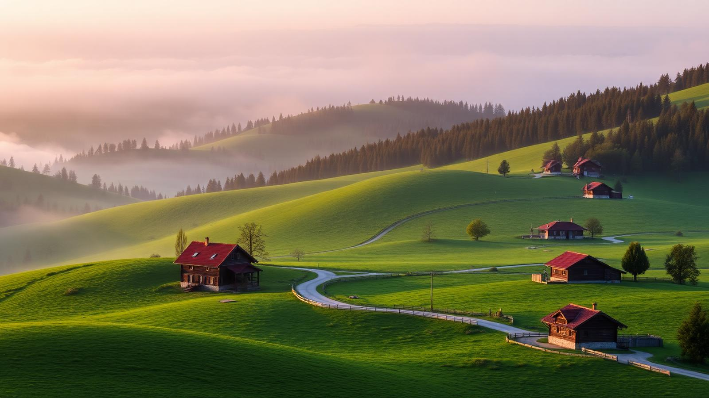
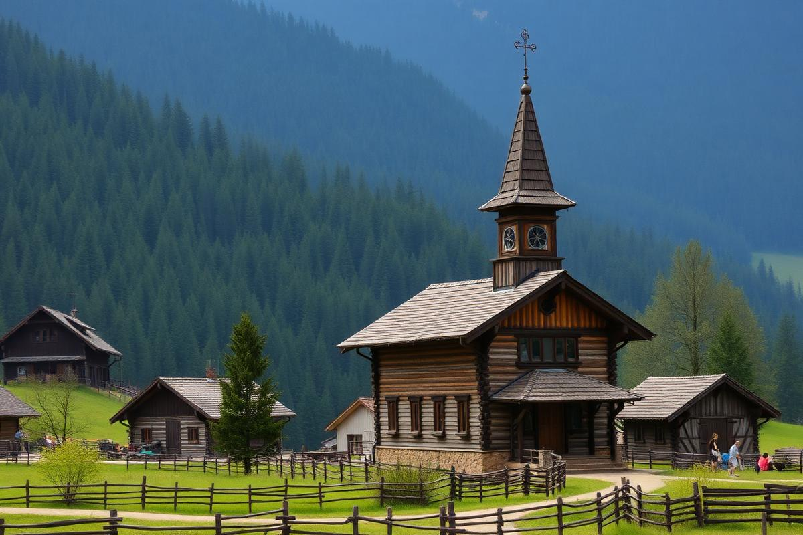
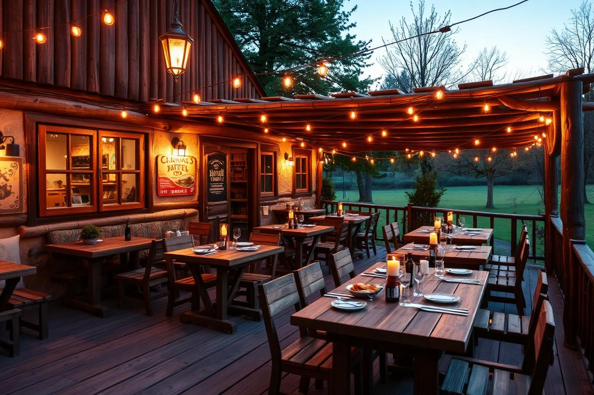
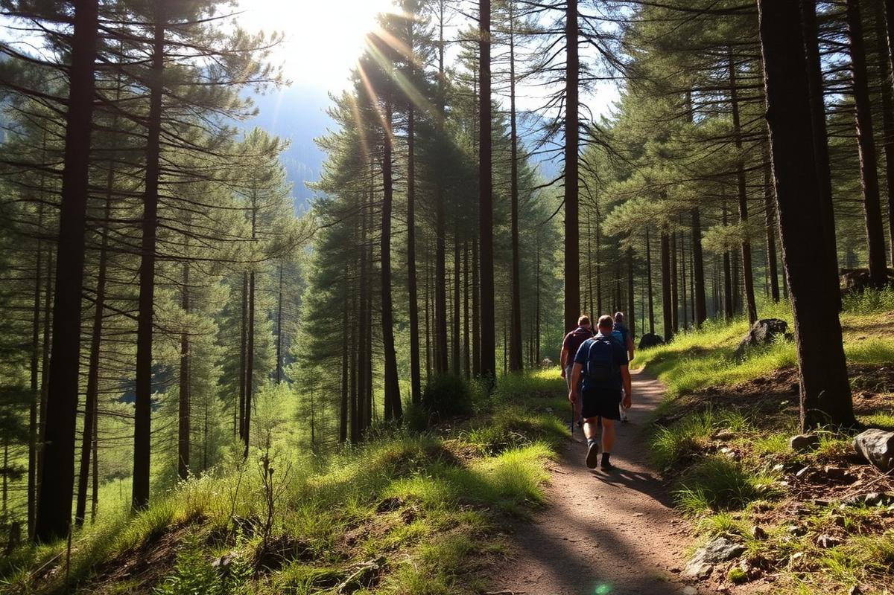

Casa Afetelor
Pizzeria & Terrace
A local favourite. Wood-fired pizza with a Romanian twist, cold beer, and a terrace that catches the evening sun.

A Guide to the Village of
A quiet corner of northeastern Romania where forested hills, wooden churches and warm bread waiting on a table make the anxious world feel very far away.

Nestled along the Neamț river at the foot of the Stânișoara Mountains, Pipirig has been inhabited since at least the 15th century. Old chronicles mention it as a shepherds' settlement whose people carried salt, timber and stories between Moldavia and Transylvania.
The village is best known as the birthplace of the mother of Ion Creangă, one of Romania's most beloved storytellers. Wander its lanes and you'll pass wooden houses, an old Orthodox church, and hillsides where traditions of woodcarving and sheep herding are still very much alive.
Time here doesn't rush. The bells of the church at dawn, the smoke from a distant chimney, the horse cart taking the long way home — Pipirig has kept a rhythm the rest of the world has forgotten.
Spread across a commune of seven villages: Pipirig, Boboiești, Dolhești, Leghin, Pâțul, Pluton and Stânca.
Perched between the Neamț valley and the Stânișoara ridge — pine forests all around.
The mother of storyteller Ion Creangă, Smaranda, was born here. His childhood tales echo these hills.
Wooden spoons, sheepskin coats and hand-woven wool are still produced by local families.
Snow blankets the roofs from December to March; wildflowers take over the meadows in June.
Just a short drive from Neamț, Secu and Sihăstria — some of Romania's most famous painted monasteries.

Hunger in Pipirig is a good problem. Local kitchens still cook the slow way — with butter from the neighbor's cow and herbs from the garden out back.
Pizzeria & Terrace
A local favourite. Wood-fired pizza with a Romanian twist, cold beer, and a terrace that catches the evening sun.
Guesthouse · Home cooking
Sleep in a wooden room that smells of pine and wake up to fresh bread, homemade jam and a very serious cup of coffee.
Traditional Inn
Sarmale, mămăligă and grilled trout from the Neamț river. Ask for the plum brandy — it comes with stories.
Mountain Retreat
A little above the village. Fire pit, long views, no wifi, and stars you had forgotten still existed.

Pipirig doesn't do theme parks. It does long walks, deep quiet, and the kind of afternoons that fix things you didn't know were broken.
Marked trails leave straight from the village. Two hours up, all of eternity's worth of view down.
A small museum in nearby Humulești celebrates Romania's best-loved storyteller — Creangă spent his childhood in these hills.
Loop through Neamț, Secu, Sihăstria and Sihla — painted walls, chanting monks, forest silence.
Locals still keep working horses. Ask a neighbour; you'll get a slow tour and probably an invitation to lunch.
Grayling and trout for the patient. Bring a book for when they don't bite.
When snow arrives, every hill becomes a sledge run. The village kids are the local champions — good luck.